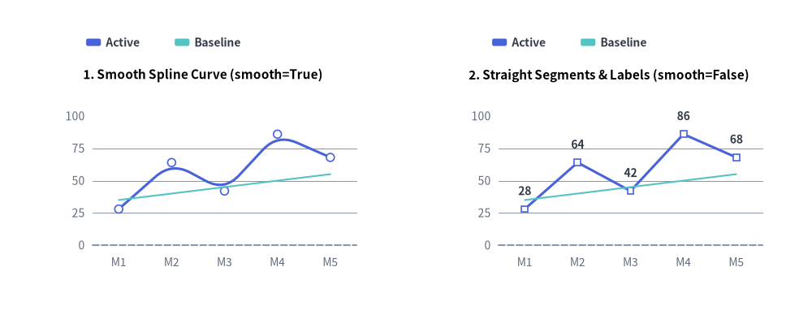
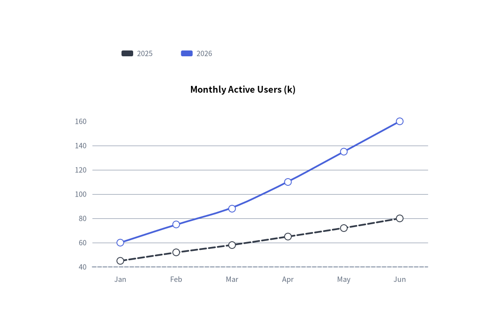
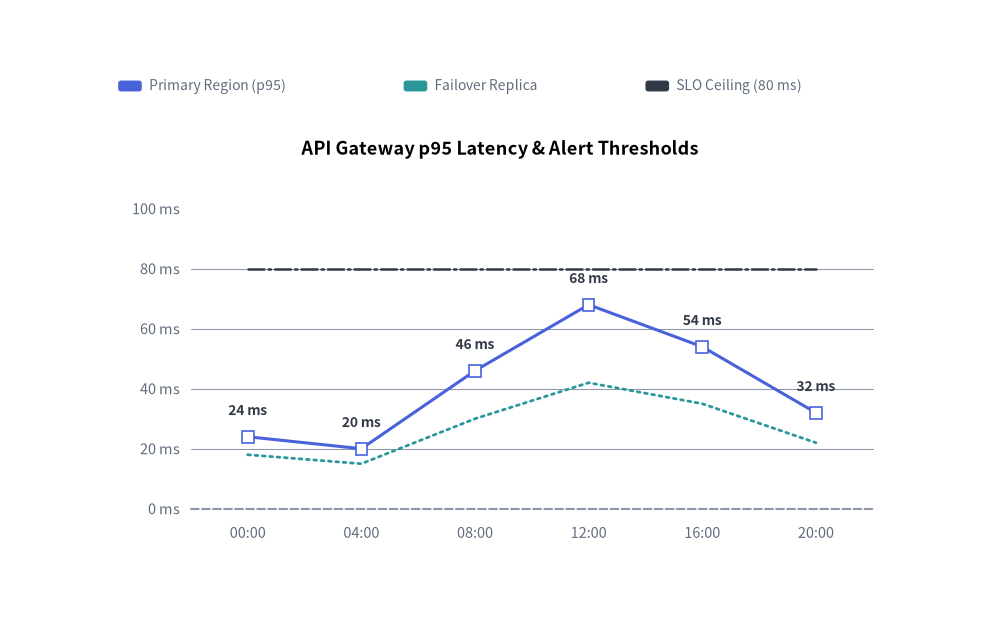

LineChart: Continuous Trends, Markers & Splines
The LineChart component (drawlib.charts.line) visualizes numerical trends over ordered categories or time intervals. It supports straight polygonal segments (smooth=False), smoothed spline curves (smooth=True), per-series vertex marker shapes ("circle", "square", "none"), configurable stroke patterns ("solid", "dashed", "dotted", "dashdot"), inline vertex value labels, and decoupled legend rendering.
1. Overview & Key Modes

Source Code
from drawlib.canvas import save, setup
from drawlib.charts.line import LineChart
from drawlib.styles import Styles
setup(width=132, height=52)
categories = ["M1", "M2", "M3", "M4", "M5"]
active_vals = [28.0, 64.0, 42.0, 86.0, 68.0]
baseline_vals = [35.0, 40.0, 45.0, 50.0, 55.0]
# Left: Smooth Spline Curve (smooth=True)
smooth_chart = LineChart(
axis_line_style=Styles.MutedDashed,
categories=categories,
axis_text_style=Styles.Muted.patch(text_size=10.0),
grid_style=Styles.MutedThin,
width=56.0,
height=36.0,
smooth=True,
show_points=True,
point_size=0.65,
title="1. Smooth Spline Curve (smooth=True)",
title_style=Styles.BlackBold.patch(text_size=11.0),
)
smooth_chart.add_series("Active", active_vals, style=Styles.PrimaryFlat, line_width=2.2)
smooth_chart.add_series("Baseline", baseline_vals, style=Styles.SecondaryNeutral, line_style="dashed", point_shape="none")
smooth_chart.configure_y_axis(min_value=0.0, max_value=100.0, tick_step=25.0)
smooth_chart.draw(xy=(5.0, 6.0))
smooth_chart.draw_legend(xy=(14.0, 45.0), text_style=Styles.DarkBold.patch(text_size=10.0), orientation="horizontal")
# Right: Straight Segments & Value Labels (smooth=False)
straight_chart = LineChart(
axis_line_style=Styles.MutedDashed,
categories=categories,
axis_text_style=Styles.Muted.patch(text_size=10.0),
grid_style=Styles.MutedThin,
value_text_style=Styles.DarkBold.patch(text_size=10.0),
width=56.0,
height=36.0,
smooth=False,
show_points=True,
point_shape="square",
point_size=0.65,
title="2. Straight Segments & Labels (smooth=False)",
title_style=Styles.BlackBold.patch(text_size=11.0),
)
straight_chart.add_series("Active", active_vals, style=Styles.PrimaryFlat, line_width=2.2)
straight_chart.add_series("Baseline", baseline_vals, style=Styles.SecondaryNeutral, line_style="dashed", point_shape="none")
straight_chart.configure_y_axis(min_value=0.0, max_value=100.0, tick_step=25.0)
straight_chart.draw(xy=(71.0, 6.0))
straight_chart.draw_legend(xy=(80.0, 45.0), text_style=Styles.DarkBold.patch(text_size=10.0), orientation="horizontal")
save()
- Straight vs. Smooth Curves (
smooth):smooth=False(default): Connects category vertices with crisp, straight polygonal line segments.smooth=True: Renders organic, rounded curves through data vertices (when 3 or more points are present).
- Vertex Markers & Per-Series Overrides (
show_points,point_shape,point_size):- Chart-level
point_shape("circle","square","none") andpoint_size(0.7default) apply to all series unless overridden inadd_series(..., point_shape=..., point_size=...). - Setting
point_shape="none"on a specific series suppresses both its vertex markers and itsvalue_text_stylelabels—ideal for flat target or threshold reference lines.
- Chart-level
- Stroke Patterns (
line_style): Supports"solid","dashed","dotted", and"dashdot". - Vertex Value Annotations (
value_text_style): When provided (notNone), formats each vertex value usingy_axis.format_value(v)and renders it directly above the marker.
2. Quick Example: Smooth Spline User Growth Trends
from drawlib.canvas import save, setup
from drawlib.charts.line import LineChart
from drawlib.styles import Styles
setup(width=100, height=68)
chart = LineChart(
axis_line_style=Styles.MutedDashed,
categories=["Jan", "Feb", "Mar", "Apr", "May", "Jun"],
axis_text_style=Styles.Muted.patch(text_size=10.5),
grid_style=Styles.MutedThin,
width=82,
height=45,
title="Monthly Active Users (k)",
title_style=Styles.BlackBold.patch(text_size=13.0),
smooth=True,
show_points=True,
)
chart.add_series("2025", [45, 52, 58, 65, 72, 80], style=Styles.DarkFlat, line_width=2.5, line_style="dashed")
chart.add_series("2026", [60, 75, 88, 110, 135, 160], style=Styles.PrimaryFlat, line_width=2.5)
chart.draw(xy=(9, 7))
chart.draw_legend(xy=(25, 57), text_style=Styles.Muted.patch(text_size=10.5), orientation="horizontal")
save()

3. Straight Segments, Custom Markers, Stroke Styles & Vertex Labels
By combining smooth=False (straight segments) with value_text_style, per-series point_shape ("square", "circle", "none"), and distinct line_style patterns ("solid", "dotted", "dashdot"), you can plot telemetry metrics alongside SLA thresholds:
from drawlib.canvas import save, setup
from drawlib.charts.line import LineChart
from drawlib.styles import Styles
setup(width=110, height=70)
chart = LineChart(
axis_line_style=Styles.MutedDashed,
categories=["00:00", "04:00", "08:00", "12:00", "16:00", "20:00"],
width=88.0,
height=48.0,
title="API Gateway p95 Latency & Alert Thresholds",
title_style=Styles.BlackBold.patch(text_size=13.0),
smooth=False,
show_points=True,
axis_text_style=Styles.Muted.patch(text_size=10.5),
grid_style=Styles.MutedThin,
value_text_style=Styles.DarkBold.patch(text_size=10.0),
)
chart.add_series(
"Primary Region (p95)",
[24.0, 20.0, 46.0, 68.0, 54.0, 32.0],
style=Styles.PrimaryFlat,
line_width=2.2,
point_shape="square",
point_size=0.8,
)
chart.add_series(
"Failover Replica",
[18.0, 15.0, 30.0, 42.0, 35.0, 22.0],
style=Styles.SecondaryFlat,
line_width=2.0,
line_style="dotted",
point_shape="none",
)
chart.add_series(
"SLO Ceiling (80 ms)",
[80.0, 80.0, 80.0, 80.0, 80.0, 80.0],
style=Styles.DarkFlat,
line_width=1.8,
line_style="dashdot",
point_shape="none",
)
chart.configure_y_axis(min_value=0.0, max_value=100.0, tick_step=20.0, format="{:.0f}", unit="ms")
chart.draw(xy=(11.0, 8.0))
chart.draw_legend(
xy=(13.0, 60.5),
text_style=Styles.Muted.patch(text_size=10.0),
orientation="horizontal",
swatch_size=(2.6, 1.2),
item_gap=4.0,
)
save()

4. API Reference
Constructor (LineChart)
All constructor arguments are keyword-only (*):
from drawlib.charts.line import Axis, DrawDirection, FormatterType, LineChart, LineStyle, PointShape, Series
chart = LineChart(
*,
axis_line_style: Style,
categories: list[str],
width: float = 80.0,
height: float = 50.0,
show_points: bool = True,
point_shape: PointShape = "circle",
point_size: float = 0.7,
smooth: bool = False,
axis_text_style: Style | None = None,
grid_style: Style | None = None,
value_text_style: Style | None = None,
background_style: Style | None = None,
title: str = "",
title_style: Style | None = None,
)
| Parameter | Type | Default | Description |
|---|---|---|---|
axis_line_style |
Style |
Required | Mandatory style anchor for the coordinate baseline stroke. |
categories |
list[str] |
Required | Ordered category labels along the horizontal X-axis. |
width / height |
float |
80.0 / 50.0 |
Total bounding box dimensions of the chart in canvas units. |
show_points |
bool |
True |
Whether to render markers at vertex coordinates. |
point_shape |
"circle" | "square" | "none" |
"circle" |
Default vertex marker shape (PointShape). |
point_size |
float |
0.7 |
Default marker radius (or half-width for squares) in canvas units. |
smooth |
bool |
False |
When True, interpolates smooth curved segments through vertices. |
axis_text_style |
Style | None |
None |
Style for Y-axis tick labels and X-axis category names. If None, labels are omitted. |
grid_style |
Style | None |
None |
Style for horizontal Y-axis gridlines. If None, gridlines are omitted. |
value_text_style |
Style | None |
None |
Style for numeric labels drawn above vertex markers. If None, value labels are omitted. |
background_style |
Style | None |
None |
Style for the outer chart background card. If None, card is omitted. |
title |
str |
"" |
Chart title text rendered at the top of the container. |
title_style |
Style | None |
None |
Typography style for title. Required for the title to render. |
Methods & Properties
add_series(name: str, values: list[float], style: Style, line_width: float = 2.0, line_style: LineStyle = "solid", point_shape: PointShape | None = None, point_size: float | None = None, legend_text_style: Style | None = None, *, show: bool = True, draw_ratio: float = 1.0, draw_direction: DrawDirection = "left_to_right") -> Series: Registers a line series and returns the mutableSeriesinstance.line_styleaccepts"solid","dashed","dotted", or"dashdot".point_shapeandpoint_sizeoverride chart-level defaults for that series.configure_y_axis(...) -> Axis/configure_x_axis(...) -> Axis: Configures the vertical value axis (scale,min_value,max_value,ticks,tick_step,format,unit,label) or horizontal category axis (show_axis_line,line_style,tick_label_style). See Axes, Scales & Legends.get_size() -> tuple[float, float]: Returns(width, height)of the chart container.draw(xy: tuple[float, float] = (0.0, 0.0), *, width: float | None = None, height: float | None = None, scale: float = 1.0) -> None: Renders the chart anchored at bottom-leftxy, with optional temporary size overrides and proportionalscale.draw_legend(xy: tuple[float, float], text_style: Style, orientation: Literal["vertical", "horizontal"] = "vertical", swatch_size: tuple[float, float] = (2.4, 1.2), item_gap: float = 4.0, *, scale: float = 1.0) -> None: Renders the decoupled series legend atxy.- Properties:
chart.series -> list[Series]: Returns a copy of registeredSeriesobjects.chart.x_axis -> Axis/chart.y_axis -> Axis: Direct access to the horizontal and verticalAxisinstances.